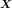
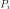
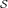
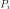
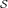
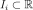
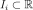
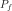

DirectionalSampling¶
- class DirectionalSampling(*args)¶
Directional simulation.
Refer to Directional Simulation.
- Available constructors:
DirectionalSampling(event=ot.Event())
DirectionalSampling(event, rootStrategy, samplingStrategy)
- Parameters
- event
RandomVector Event we are computing the probability of.
- rootStrategy
RootStrategy Strategy adopted to evaluate the intersections of each direction with the limit state function and take into account the contribution of the direction to the event probability. By default, rootStrategy = ot.RootStrategy(ot.SafeAndSlow()).
- samplingStrategy
SamplingStrategy Strategy adopted to sample directions. By default, samplingStrategy=ot.SamplingStrategy(ot.RandomDirection()).
- event
Notes
Using the probability distribution of a random vector , we seek to evaluate the following probability:
Here, is a random vector,
 a deterministic
vector,
a deterministic
vector,  the function known as limit state function
which enables the definition of the event
.
describes the indicator function equal to 1 if
and equal to 0 otherwise.
the function known as limit state function
which enables the definition of the event
.
describes the indicator function equal to 1 if
and equal to 0 otherwise.The directional simulation method is an accelerated sampling method. It implies a preliminary iso-probabilistic transformation, as for
FORMandSORMmethods; however, it remains based on sampling and is thus not an approximation method. In the transformed space, the (transformed) uncertain variables are independent standard gaussian variables (mean equal to zero and standard
deviation equal to 1).
are independent standard gaussian variables (mean equal to zero and standard
deviation equal to 1).Roughly speaking, each simulation of the directional simulation algorithm is made of three steps. For the
 iteration, these steps are
the following:
iteration, these steps are
the following:Let
 . A point
 is drawn randomly on  according to an uniform
distribution.
. A point
 is drawn randomly on  according to an uniform
distribution.In the direction starting from the origin and passing through , solutions of the equation
 (i.e. limits of
(i.e. limits of
 ) are searched. The set of values of that
belong to is deduced for these solutions: it is a subset
.
) are searched. The set of values of that
belong to is deduced for these solutions: it is a subset
.Then, one calculates the probability
 .
By property of independent standard variable,
.
By property of independent standard variable,  is a
random variable distributed according to a chi-square distribution, which
makes the computation effortless.
is a
random variable distributed according to a chi-square distribution, which
makes the computation effortless.
Finally, the estimate of the probability  after
 simulations
is the following:
simulations
is the following:
Examples
>>> import openturns as ot >>> ot.RandomGenerator.SetSeed(0) >>> myFunction = ot.SymbolicFunction(['E', 'F', 'L', 'I'], ['-F*L^3/(3*E*I)']) >>> myDistribution = ot.Normal([50.0, 1.0, 10.0, 5.0], [1.0]*4, ot.IdentityMatrix(4)) >>> # We create a 'usual' RandomVector from the Distribution >>> vect = ot.RandomVector(myDistribution) >>> # We create a composite random vector >>> output = ot.CompositeRandomVector(myFunction, vect) >>> # We create an Event from this RandomVector >>> myEvent = ot.ThresholdEvent(output, ot.Less(), -3.0) >>> # We create a DirectionalSampling algorithm >>> myAlgo = ot.DirectionalSampling(myEvent, ot.MediumSafe(), ot.OrthogonalDirection()) >>> myAlgo.setMaximumOuterSampling(150) >>> myAlgo.setBlockSize(4) >>> myAlgo.setMaximumCoefficientOfVariation(0.1) >>> # Perform the simulation >>> myAlgo.run() >>> print('Probability estimate=%.6f' % myAlgo.getResult().getProbabilityEstimate()) Probability estimate=0.169716
Methods
drawProbabilityConvergence(*args)Draw the probability convergence at a given level.
Accessor to the block size.
Accessor to the object's name.
Accessor to the convergence strategy.
getEvent()Accessor to the event.
getId()Accessor to the object's id.
Accessor to the maximum coefficient of variation.
Accessor to the maximum sample size.
Accessor to the maximum standard deviation.
getName()Accessor to the object's name.
Accessor to the results.
Get the root strategy.
Get the direction sampling strategy.
Accessor to the object's shadowed id.
Accessor to verbosity.
Accessor to the object's visibility state.
hasName()Test if the object is named.
Test if the object has a distinguishable name.
run()Launch simulation.
setBlockSize(blockSize)Accessor to the block size.
setConvergenceStrategy(convergenceStrategy)Accessor to the convergence strategy.
Accessor to the maximum coefficient of variation.
setMaximumOuterSampling(maximumOuterSampling)Accessor to the maximum sample size.
Accessor to the maximum standard deviation.
setName(name)Accessor to the object's name.
setProgressCallback(*args)Set up a progress callback.
setRootStrategy(rootStrategy)Set the root strategy.
setSamplingStrategy(samplingStrategy)Set the direction sampling strategy.
setShadowedId(id)Accessor to the object's shadowed id.
setStopCallback(*args)Set up a stop callback.
setVerbose(verbose)Accessor to verbosity.
setVisibility(visible)Accessor to the object's visibility state.
- __init__(*args)¶
- drawProbabilityConvergence(*args)¶
Draw the probability convergence at a given level.
- Parameters
- levelfloat, optional
The probability convergence is drawn at this given confidence length level. By default level is 0.95.
- Returns
- grapha
Graph probability convergence graph
- grapha
- getBlockSize()¶
Accessor to the block size.
- Returns
- blockSizeint
Number of terms in the probability simulation estimator grouped together. It is set by default to 1.
- getClassName()¶
Accessor to the object’s name.
- Returns
- class_namestr
The object class name (object.__class__.__name__).
- getConvergenceStrategy()¶
Accessor to the convergence strategy.
- Returns
- storage_strategy
HistoryStrategy Storage strategy used to store the values of the probability estimator and its variance during the simulation algorithm.
- storage_strategy
- getEvent()¶
Accessor to the event.
- Returns
- event
RandomVector Event we want to evaluate the probability.
- event
- getId()¶
Accessor to the object’s id.
- Returns
- idint
Internal unique identifier.
- getMaximumCoefficientOfVariation()¶
Accessor to the maximum coefficient of variation.
- Returns
- coefficientfloat
Maximum coefficient of variation of the simulated sample.
- getMaximumOuterSampling()¶
Accessor to the maximum sample size.
- Returns
- outerSamplingint
Maximum number of groups of terms in the probability simulation estimator.
- getMaximumStandardDeviation()¶
Accessor to the maximum standard deviation.
- Returns
- sigmafloat,

Maximum standard deviation of the estimator.
- sigmafloat,
- getName()¶
Accessor to the object’s name.
- Returns
- namestr
The name of the object.
- getResult()¶
Accessor to the results.
- Returns
- results
SimulationResult Structure containing all the results obtained after simulation and created by the method
run().
- results
- getRootStrategy()¶
Get the root strategy.
- Returns
- strategy
RootStrategy Root strategy adopted.
- strategy
- getSamplingStrategy()¶
Get the direction sampling strategy.
- Returns
- strategy
SamplingStrategy Direction sampling strategy adopted.
- strategy
- getShadowedId()¶
Accessor to the object’s shadowed id.
- Returns
- idint
Internal unique identifier.
- getVerbose()¶
Accessor to verbosity.
- Returns
- verbosity_enabledbool
If True, the computation is verbose. By default it is verbose.
- getVisibility()¶
Accessor to the object’s visibility state.
- Returns
- visiblebool
Visibility flag.
- hasName()¶
Test if the object is named.
- Returns
- hasNamebool
True if the name is not empty.
- hasVisibleName()¶
Test if the object has a distinguishable name.
- Returns
- hasVisibleNamebool
True if the name is not empty and not the default one.
- run()¶
Launch simulation.
Notes
It launches the simulation and creates a
SimulationResult, structure containing all the results obtained after simulation. It computes the probability of occurence of the given event by computing the empirical mean of a sample of size at most outerSampling * blockSize, this sample being built by blocks of size blockSize. It allows to use efficiently the distribution of the computation as well as it allows to deal with a sample size by a combination of blockSize and
outerSampling.
by a combination of blockSize and
outerSampling.
- setBlockSize(blockSize)¶
Accessor to the block size.
- Parameters
- blockSizeint,
Number of terms in the probability simulation estimator grouped together. It is set by default to 1.
Notes
For Monte Carlo, LHS and Importance Sampling methods, this allows to save space while allowing multithreading, when available we recommend to use the number of available CPUs; for the Directional Sampling, we recommend to set it to 1.
- setConvergenceStrategy(convergenceStrategy)¶
Accessor to the convergence strategy.
- Parameters
- storage_strategy
HistoryStrategy Storage strategy used to store the values of the probability estimator and its variance during the simulation algorithm.
- storage_strategy
- setMaximumCoefficientOfVariation(maximumCoefficientOfVariation)¶
Accessor to the maximum coefficient of variation.
- Parameters
- coefficientfloat
Maximum coefficient of variation of the simulated sample.
- setMaximumOuterSampling(maximumOuterSampling)¶
Accessor to the maximum sample size.
- Parameters
- outerSamplingint
Maximum number of groups of terms in the probability simulation estimator.
- setMaximumStandardDeviation(maximumStandardDeviation)¶
Accessor to the maximum standard deviation.
- Parameters
- sigmafloat,
Maximum standard deviation of the estimator.
- sigmafloat,
- setName(name)¶
Accessor to the object’s name.
- Parameters
- namestr
The name of the object.
- setProgressCallback(*args)¶
Set up a progress callback.
Can be used to programmatically report the progress of a simulation.
- Parameters
- callbackcallable
Takes a float as argument as percentage of progress.
Examples
>>> import sys >>> import openturns as ot >>> experiment = ot.MonteCarloExperiment() >>> X = ot.RandomVector(ot.Normal()) >>> Y = ot.CompositeRandomVector(ot.SymbolicFunction(['X'], ['1.1*X']), X) >>> event = ot.ThresholdEvent(Y, ot.Less(), -2.0) >>> algo = ot.ProbabilitySimulationAlgorithm(event, experiment) >>> algo.setMaximumOuterSampling(100) >>> algo.setMaximumCoefficientOfVariation(-1.0) >>> def report_progress(progress): ... sys.stderr.write('-- progress=' + str(progress) + '%\n') >>> algo.setProgressCallback(report_progress) >>> algo.run()
- setRootStrategy(rootStrategy)¶
Set the root strategy.
- Parameters
- strategy
RootStrategy Root strategy adopted.
- strategy
- setSamplingStrategy(samplingStrategy)¶
Set the direction sampling strategy.
- Parameters
- strategy
SamplingStrategy Direction sampling strategy adopted.
- strategy
- setShadowedId(id)¶
Accessor to the object’s shadowed id.
- Parameters
- idint
Internal unique identifier.
- setStopCallback(*args)¶
Set up a stop callback.
Can be used to programmatically stop a simulation.
- Parameters
- callbackcallable
Returns an int deciding whether to stop or continue.
Examples
Stop a Monte Carlo simulation algorithm using a time limit
>>> import openturns as ot >>> experiment = ot.MonteCarloExperiment() >>> X = ot.RandomVector(ot.Normal()) >>> Y = ot.CompositeRandomVector(ot.SymbolicFunction(['X'], ['1.1*X']), X) >>> event = ot.ThresholdEvent(Y, ot.Less(), -2.0) >>> algo = ot.ProbabilitySimulationAlgorithm(event, experiment) >>> algo.setMaximumOuterSampling(10000000) >>> algo.setMaximumCoefficientOfVariation(-1.0) >>> timer = ot.TimerCallback(0.1) >>> algo.setStopCallback(timer) >>> algo.run()
- setVerbose(verbose)¶
Accessor to verbosity.
- Parameters
- verbosity_enabledbool
If True, make the computation verbose. By default it is verbose.
- setVisibility(visible)¶
Accessor to the object’s visibility state.
- Parameters
- visiblebool
Visibility flag.